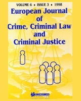
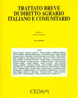

Diritto agrario
|  | EUROPEAN JOURNAL OF CRIME, CRIMINAL LAW AND CRIMINAL JUSTICE
Articles - Gabriele Donà: Towards a European Judicial Area? A Corpus Juris Introducing Penal Provisions for the Purpose of the Protection of the Financial Interests of the European Union. |
|  | TRATTATO BREVE DI DIRITTO AGRARIO ITALIANO E COMUNITARIO
diretto da L. Costato, Cedam, III edizione (2003)
indice Analitico
Capitolo I: L'agricoltura e il suo diritto
|